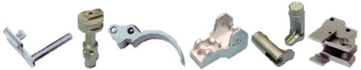
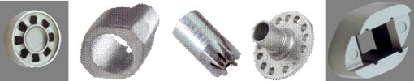

|
MIM Teknolojisinin Uygulama Alanlarý:
MIM
teknolojisinin henüz emekleme safhasýnda bir imalat tekniði
olduðu belirtilmektedir. Ancak her geçen gün yeni bir MIM
parçanýn devreye girmesi ile ateþli silahlar, otomotiv, týp,
el aletleri, elektronik, optik, havacýlýk, beyaz eþya, tüketim
mallarý gibi bir çok endüstri kolunda uygulama alaný bulduðu
görülmektedir. Kuþkusuz MIM teknolojisinin sýnýrlarý geniþledikçe,
kýsa bir süreç içerisinde ve týpký plastik malzemelerin hayatýmýza
girdiði gibi yaygýnlaþarak geniþ bir Pazar yaratacaðý öngörülmektedir.
Aþaðýda çeþitli endüstri kollarýna göre bu zamana kadar yapýlmýþ
MIM uygulamalarýndan örnekler verilmektedir:
Ateþli
Silahlar: Günümüzde tabanca, tüfek, av tüfeði mekanizmalarýna
ait bir çok parçanýn MIM teknolojisi ile üretilmesi oldukça
yaygýndýr. Bu parçalar göreceli olarak küçük, karmaþýk ve
finiþ olarak hassas özelliklere sahiptir. Bir ateþli silahta
böyle 10-20 adet farklý tipte küçük parça bulunmaktadýr. Gez
ve Arpacýk, Sürgü, Tetik, Týrnak, Horoz, Emniyet Pimi, Ejektör,
Mekanizma, Çýkarýcý, Þarjör Kilidi ve diðerleri.

Þekil. 10 - Ateþli Silah Endüstrisi MIM için ideal bir uygulama
alanýdýr.
Otomotiv: Emniyet mekanizmalarý -özellikle Air Bag
sistemi parçalarý, Sinyal üniteleri, Yakýt Enjeksiyon Sistemleri,
Fren (ABS) sistemleri, Turbo doldurucular, Kapý ve Kilit Mekanizmalarý,
Direksiyon ve Aksesuarlar için kol, pim, levye vs. gibi yapý
elemanlarý, Selenoidler ve elektrik sistemi için muhtelif
parçalar.

Þekil. 11 - MIM parçalarýn otomotiv endüstrisinde kullanýmý
gittikçe artmaktadýr.
Týp ve Medikal Endüstri: Medikal amaçla kullanýlan
parçalar genellikle 316L, 420, 440C paslanmaz veya titanyum
alaþýmlarýndan yapýlýr. Endoskop parçalarý, Makas ve Forsepsler,
Protezler ve Ortodontik baðlantý parçalarý, Dental matkap
uçlarý, Türbin vs.

Þekil. 12 - Medikal uygulamalar için MIM parçalara örnekler.
El Aletleri Endüstrisi: Elektrikli matkaplar, tornavidalar,
testereler, vidalama ekipmanlarý gibi el aletleri için çeþitli
metal parçalar, Matkap ayaklarý, Transmisyon parçalarý, Mekanik
parçalar vs. Tipik Malzemeler AISI 4340 (sertleþtirilmiþ)
ve 2% NiFe (yüzey sertleþtirilmiþ)
Þekil. 13 - El Aletleri Endüstrisinde kullanýlan MIM parçalara
örnekler.
Elektronik
Endüstrisi: Çeþitli elektronik gereçler için metal parçalar
(harddisk göbekleri, dizüstü bilgisayarlar için menteþe ve
kilitler), Telekomünikasyon Cihazlarý (Cep telefonlarý, telsiz
vs.), Ofis Ekipmanlarý, Yazýcýlar, Fotokopi makinalarý, Fotoðraf
Makinasý ve Kamera parçalarý vb.
Þekil. 14 - Elektronik Endüstrisinde kullanýlan MIM parçalara
örnekler.
Sonuç:
Görece
küçük, karmaþýk þekilli, hassas toleranslý parçalarýn, yüksek
mekanik özelliklere sahip metal malzemelerden kaliteli bir
biçimde ve büyük miktarlarda üretilmesi geleceðin imalat teknolojisi
olarak gösterilen Metal Enjeksiyon Kalýplama - MIM yöntemi
ile yapýlmaktadýr. Dizayn mühendislerine klasik imalat metodlarýnýn
ötesinde bir imkan sunan MIM, tasarým ve üretimde sýnýrlarýn
zorlanmasýna neden olmaktadýr. Henüz emekleme safhasýnda bulunan
MIM teknolojisinin günümüzdeki aðýrlýk merkezleri Amerika,
Batý Avrupa ülkeleri, Ýsrail, Çin ve Hindistan olarak görülürken,
metod maalesef ülkemizde bilinmemektedir. Ancak MIM teknolojisi,
1960'lardan sonra hayatýmýza büyük bir hýzla giren ve hemen
hemen her alanda kullanýlmaya baþlanan silikon vadisi ürünleri
gibi yüksek bir geliþme ve yayýlma eðilimi göstermektedir.
Daha þimdiden Ýsviçre'deki büyük saat imalatçýlarýnýn ya da
Ýtalya'daki ünlü gözlük üreticilerinin veya Amerika'nýn dev
telekomünikasyon cihazlarý üreten firmalarýnýn, ürünlerinin
metal aksamlarýnýn tamamýna yakýn kýsmýný MIM teknolojisiyle
tasarlayýp imal etmesi dikkatleri bu yöne çekmektedir.
MIM
Teknolojisinde Kullanýlan Bazý Malzemeler:
Paslanmaz
Çelikler:
- AISI
316L (DIN 1.4436) > Fe-17Cr-12Ni-2Mo-2Mn
- AISI
316L Dublex (DIN 1.4404) > Fe-21Cr-9Ni-3Mo-2Mn
- AISI
304L (DIN 1.4306) > Fe-18Cr-8Ni
- AISI
410L > Fe-11Cr-0.5C
- AISI
420 (DIN 1.4021) > Fe-13Cr-1Mn-1Si
- AISI
430 (DIN 1.4016) > Fe-17Cr-1Mn-1Si-1Ni
- AISI
440C (DIN 1.4125) > Fe-17Cr-1Ni-1C
- AISI
17-4PH (DIN 1.4542, 1.4548) > Fe-16Cr-4Ni-4Cu
Yüksek Mukavemetli Düþük Alaþýmlý Çelikler:
- AISI
4340 (DIN 1.6565) > Fe-2Cr-1Ni-1Mn-0.4C
- AISI
4140 (DIN 1.7225) > Fe-1Cr-0.4C
- AISI
H13 (DIN 1.2344)
- AISI
4640 > Fe-2Ni-1Mo-0.4C
- 1020
> Fe-0.2C
Sementasyon
Çelikleri:
- 7%
Ni-Fe > Fe-7Ni-0.5C
- 2%
Ni-Fe > Fe-2Ni-0.5C
- AISI
8620 > (DIN 1.6543, 1.6526)
Yumuþak
Manyetik Malzemeler:
- 2%
Ni-Fe > Fe-2Ni-0.5C
- 40%
Ni-Fe > Fe-40Ni
- 50%
Ni-Fe > (DIN 1.3927) Fe-50Ni
- 80%
Ni-Fe > Ni-20Fe
- 3%
Si-Fe > Fe-3Si
- 7%
Si-Fe > Fe-7Si
- Iron
> Fe
- 2V
Permendur
Yüksek
Alaþýmlý Özel Malzemeler:
- 36%
Ni-Fe (Invar) > Fe-36Ni
- 32%
Ni-Fe (Süper Invar) > Fe-32Ni-5Co
- 42%
Ni-Fe
- ASTM
F 15 (Kovar) > Fe-29Ni-17Co
- Stellite
> Co-28Cr-4W-3Ni-1C
- Inconel
718 > Ni-19Cr-18Fe-5Nb-3Mo-1Ti-0.4Al
- Takým
Çeliði > Fe-6W-5Mo-4Cr-2V-1C
- Udimet
700 > Ni-18Co-15Cr-5Mo-4Al-3Ti
- Hastelloy
> Ni-28Mo-2Fe
- Süper
alaþým > Nb-10W-10Ta
Diðer
Malzemeler:
- Bakýr
> Cu
- Pirinç
(Ms58) > Cu-Zn-Pb
- Titanyum
> Ti
- Ti-6-4
> Ti-6Al-4V
- Altýn
(18 ayar) > 75Au-12.5Ag-12.5Cu
- Aðýr
Alaþýmlar > W-8Mo-8Ni-2Fe, W-5Ni-2Cu
- Sert
Maden (Tungsten karbür) > WC-10Co
Not:
Daha fazla bilgi için yazarýn ayný konudaki diðer makalesine
baþvurulabilir:
MIM
Büyücülerinin Sýrlarý
|